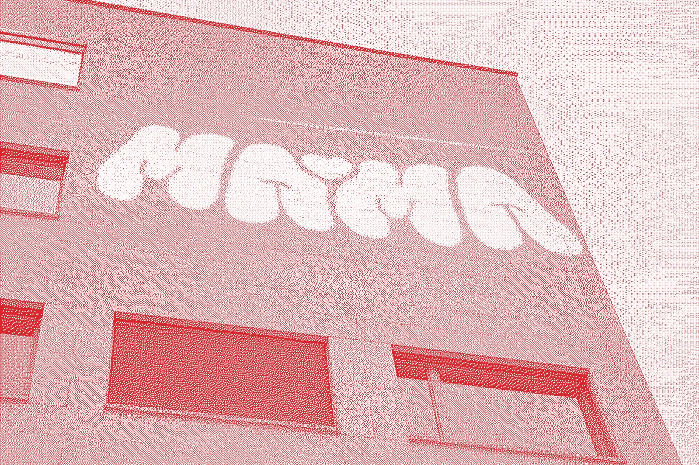

What is Material Matters?
Material Matters is a project born in 2024 during the course "Design and Production" by the Prof. Aart van Bezooijen. Together, students passionated about material reuse run the initiative since then.
Material Matters is a project born in 2024 during the course "Design and Production" by the Prof. Aart van Bezooijen. Together, students passionated about material reuse run the initiative since then.
MaMa ♡ Material Matters is récupérathèque and secondhand material bank of unibz, part of the Fédération des
Récupérathèques.
The idea is to approach the topic of “WASTE” from all the possible directions: the material ones but also from a conceptual point of view.
The idea is to approach the topic of “WASTE” from all the possible directions: the material ones but also from a conceptual point of view.
Ok, but what is a material bank?
A material bank is a place where second hand materials, that are still in good conditions are recovered. The materials are not only collected and catalogued, but also activated during Festivals and sustainable production workshops.
A material bank is a place where second hand materials, that are still in good conditions are recovered. The materials are not only collected and catalogued, but also activated during Festivals and sustainable production workshops.
A list of workshop we have organized:
- 2025, Sustainability Festival, UniBz, Zero Impact Agenda
- 2025, Sustainability Festival, UniBz, Tote Lab: Unique and sustainable bags
- 2024, UniBZ, Workshop, Till Wolfer, XYZ Karts
- 2024, UniBZ, Workshop, Refunk, Experimenting with reused object
- 2024, Fashion for Future, REX Bressanone, Sewing bags Workshops
Lectures and conferences we have participated in :
- 2025, Presenting the project inside the course "Laboratorio di Eco Social Design" - Cerri, Vacca - University of Florence
- 2025, Paper presentation at the conference "HOPE: reclaming the future", by Design and by Disaster, UniBz
- 2024, Sharing our discovery with the HFBK University in an online lecture
PRESS :
- 2025, TV33, "In UniBz la musica dal riuso"
- 2025, Alto Adige, "Unibz, Creatività e riuso"
- 2025, Corriere del Trentino,"MaMa Material Matters, A Bolzano riciclo creativo"
- 2025, Land Südtirol - Youtube, "Konsumstrategien - 2. Teil"
- 2025, Ufficio Stampa Provincia Autonoma di Bolzano, "Tabula Rasa: giovani protagonisti sul territorio"
- 2024, Alto Adige, "Riuso e Upcycling, 500 presenze all'epilogo"
COLLABORATIONS
- 2025, Guests of Radio Tandem podcast: you can listen to it from this link
- 2025, Via Dante Collective, scaffholding design for the "Edicola Takeover" project

Active members:
Aart van Bezooijen
Francesco Desimine
Leonardo Voltolini
Samuele Mogno
Irene Albanese
Joela Cugini
Maryam Sharoua
Francesca Salvo
You can reach out the team on Instagram or for serious stuff at: mama.bozen@hotmail.com
Aart van Bezooijen
Francesco Desimine
Leonardo Voltolini
Samuele Mogno
Irene Albanese
Joela Cugini
Maryam Sharoua
Francesca Salvo
You can reach out the team on Instagram or for serious stuff at: mama.bozen@hotmail.com
And a BIG thank you to the ones that carried out the project troughout the years ♡
Aart van Bezooijen
Emanuele Signorini
Maximilian Carl Stahl
Francesco Desimine
Matteo Antonazzo
Barbara Janina Koniecka
Federica Kozma
Shirin Kiefer
Pietro Rista
Konrad Freyer
Karola Ujlaki Orsolya
Masha Zorina
Anna Gagliotti
Matteo Dal Pra
Alice Peruzzo
Margherita Poli
Marianna Franceschi
Allegra D'Achille
Aart van Bezooijen
Emanuele Signorini
Maximilian Carl Stahl
Francesco Desimine
Matteo Antonazzo
Barbara Janina Koniecka
Federica Kozma
Shirin Kiefer
Pietro Rista
Konrad Freyer
Karola Ujlaki Orsolya
Masha Zorina
Anna Gagliotti
Matteo Dal Pra
Alice Peruzzo
Margherita Poli
Marianna Franceschi
Allegra D'Achille

The cave is accessible only on appointment. A MaMa member will guide you in the depths of UniBz to help you
find what you need. To take one, DM us on Instagram.
The CAVE is our core businesses . Here we store all the materials we find that are still in good conditions. They are available for free to whoever needs them.
The CAVE is our core businesses . Here we store all the materials we find that are still in good conditions. They are available for free to whoever needs them.
The CAVE works on a exchange format, therefore if you have materials that are still in good conditions you
can check with our team weather you can donate them or not.
We DO NOT accept:
In the cave you can find various materials in very different formats.
To see what we have, you can access the catalogue from the sidebar.
We DO NOT accept:
- Glass
- Clothes
- Materials with an expiry date
- BioMaterials
In the cave you can find various materials in very different formats.
To see what we have, you can access the catalogue from the sidebar.
CATALOGUE
Please check our web app to find out what we have.
Please check our web app to find out what we have.

From an old project, we have created a box capable of storing a bunch of material. Is our mailbox, where
people can open it and leave or retrieve material, accordingly with the team.
We accept donation only materials in a good state.
We do not accept: glass, clothes, other dangerous materials or biomaterials.
We accept donation only materials in a good state.
We do not accept: glass, clothes, other dangerous materials or biomaterials.
You can find it in front of the C4.03 room.

A project developed to help people move materials or entire projects around the town. Made out of alluminium
frame, and assmbled with XYZ joints, LILLE LYS is a powerfull tool, easy to replicate even with other
materials like wood.
Rent period: 1 day
Rent period: 1 day
The project realized by Hannes Simon Decker and Francesco Desimine can be replicated (file below). The
authors decline every responsibility for bad construction or misuse of the tool.
Maximum load: 60 KG
Maximum load: 60 KG
PROJECT FILES
3D FILE DOWNLOAD
BLUEPRINT DOWNLOAD

During the brainstorm of the project we discovered that students missed a way to move materials around.
That's why we recovered an old bike, fixed it and made it available at the unibz FabLab.
Ask the team and rent it for a day.
You can find it at the UniBz FabLab.
You can find it at the UniBz FabLab.

Togeether with Till Wolfer, part of N55, we designed 3 transformable karts, using aluminium profile and a
joint system called "XYZ". Student can use them to move material inside the university. They fit in the
elevator, so they are suitable to move material down in to the workshop or around the University.
To rent them, ask the team on Instagram.

Established before the creation of MaMa, Regalo Regal allow people two exchange a wide range of objects that
are still usable.
Time by time, we rearrange the items and tidy up the library. We don’t manage it directly, we just try to keep it in a good state when we have time!
Time by time, we rearrange the items and tidy up the library. We don’t manage it directly, we just try to keep it in a good state when we have time!
Ground floor of the C Building, corridor
Is a good practice to leave only items that are still usable, working and generally in a good condition. Give it a chance next time you pass by :D
Is a good practice to leave only items that are still usable, working and generally in a good condition. Give it a chance next time you pass by :D
CHAPTER 0
We are glad to know that someone want to save some materials! The aim of this page is to
give you as much information as possible to help you open your own material bank, inside your University or
wherever you like. This web-page is divided in chapters: by following them, step-2-step, you will be able to
set up successfully your material bank. You will find in each chapter a bunch of tips, be sure to read them:
they were written by people who already run a material based initiative.
CHAPTER 1
Having enough space is a crucial point for establishing a Material Bank. We suggest to
have at least 20 to 25 square meter of space at least. Is important that the space is or can be equipped with
scaffholding. The more easy to access the space is, the better. It can happen that some spaces inside the
building are not used anymore: note them down and propose them when you meet with who is in charge. In fact,
we suggest to check space availabilities with the workshops chief or your University to ensure that everything
comply to the regulation.
A material bank is Is the physical spaces where people can go to get secondhand materials
for their project.
There should be one person in charge of the safety of the building and workshops spaces,
find out who is and establish a collaboration, they will play a key role in helping you when needed.
SAFETYCheck if the space you pick comply with safety
regulation.
FIRE HAZARDMake sure to have fire extinguisher, especially
near inflammable materials.
CHAPTER 2
Once you understand that there is a possible space elegible for the Material Bank, you
should start looking for people, engaged one. The first phase will require time and determination so people
that believe in the project are fundamental. The number of people you should recruit vary on how big the
material bank will be. To gather people around the initiative is very important to have a recognizible
Identity, but we will in depth of this aspect in CHAPTER 6.
ACCADEMIC SUPPORTHaving a professor that can assist can be
very useful to handle bureocratic issues.
SKILLSETDifferent kind of tasks need to be performed, ensure
that the team can cover a fan of possible tasks. Check Chapter 7 for more info on the roles.
RECRUITMENTDuring the year make sure to organize recruitment
session. People graduate or go abroad but the material banks is always interested in an extra pair of
hands!
CHAPTER 3
Before starting the hunt for materials, is important to establish the rules under which
the material bank is going to operate. The room or the space you choose is still empty, and this is a nice
moment to make a plan on where the scaffholding will be (if they are not already present), what path the
visitors will perform and where goes what.
LIGHT UP, HEAVY DOWNThe more something is heavy, the more
close to the ground should be. This will avoid dangerous hanging object and facilitate future withdrawal
from the material bank.
NOT ON THE GROUNDStoring object should be possible only on
shelves and never on the floor. This grant more order and avoid stumbling on random objects.
CAPABILITIESIs almost inevitable that the amount of material
you get and collect will be more than the one you will be able to give out.
DON’T BE A SQUIRREL!You don’t want to accumulate, give away
as much material as you can!
CLEAN !!!Organize periodically a clean up, where materials
are reorganized and displaced correctly.
CHAPTER 4
Now that your Material bank is equipped is time to fill it up. There is a bunch of way you
can fill your Material Bank: collecting from students at the end of the semester, strolling
around.
Strolling consist in going around your materila bank, looking for material. This usually happen in a predefined area of some kilometers.
Strolling consist in going around your materila bank, looking for material. This usually happen in a predefined area of some kilometers.
RULESDecide before hand which kind of materials you accept
and which ones are instead forbidden.
HOTLINEEstablish contacts with companies, museums or others
nearby to collect precious materials. But remember, you are not their bin!
MARKET ANALYSISIs a material used every year in a certain
class? See if you find good quality material from alternative flows instead of buying it new. Then inform
the professor about it.
CLOTHES & CO.Avoid to store objects in general, especially
clothes.
MATERIAL ACTIVATIONTo free some space, you can organize
material specific workshop to upcycle material. Is a good opportunity to learn new skills and involve the
community.
CHAPTER 5
You will notice from the very beginning that sometimes you have to unscrew stuff or move
them here and there. That's why we highly suggest to build some tools to help you out. You can look in to the
/ MACHINES section of this website. Not only physical but also digital tools are important: decide with your
team which communication channels would you like to use and which office tools suites the task you need to
perform.
With communication tools used by the member of the Material Bank we intend both to communicate within the group (ex: group chat) and with the users of the material bank (ex: email or Instagram page)
We suggest a system that involve shared document like Google workspace, Microsoft Suite, Notion etc.
With communication tools used by the member of the Material Bank we intend both to communicate within the group (ex: group chat) and with the users of the material bank (ex: email or Instagram page)
We suggest a system that involve shared document like Google workspace, Microsoft Suite, Notion etc.
DOCUMENT! DOKUMENT!Documentation is very important for the
future of the material banks initiative. Make sure to have enough space to store pictures and files. You can
ask your University to have some free cloud storage.
CHAPTER 6
You have a place, people to help you, a storage and materials that are ready to become
something else. But wait, nobody knows about the existence of the place! From this moment on, communication
will be one of the core activity to guarantee that the material bank is used.
BE RECOGNIZABLEUse your brand to show that you are present in
the area and on the objects you realize for the community..
CHAPTER 7
Despite a Material Bank is based on a horizontal concept where verybody contributes in
equal way to the iniative, some roles need to be defined. In this way responsabilities are distributed and the
organization is going to be more efficient. We would suggest to have at least those key figures: a Treasurer ,
a Community Manager , a Secretary , a Social Media Manager and a Maker Chief.
The treasurer is the person in charge of administrating money and resources within the association. He keeps track of donation or possible funds opportunity.
The community manager is the person in charge of recruitment of new members. He is in charge of organize the meetings and make sure that everyone is updated with eventual changes.
The secretary is a more "official one". The secretary handle bureocratic tasks and interface himself with institutional figures. The secretary usually have the big picture of the iniatitives and lead action to fix problem or take the initiative for eventual improvements.
The Media Manager take care of all the communication media, from poster and printed media to digital ones, like social networks.
A maker chief is in charge of the administration and the developemnt of the practical projects.
The treasurer is the person in charge of administrating money and resources within the association. He keeps track of donation or possible funds opportunity.
The community manager is the person in charge of recruitment of new members. He is in charge of organize the meetings and make sure that everyone is updated with eventual changes.
The secretary is a more "official one". The secretary handle bureocratic tasks and interface himself with institutional figures. The secretary usually have the big picture of the iniatitives and lead action to fix problem or take the initiative for eventual improvements.
The Media Manager take care of all the communication media, from poster and printed media to digital ones, like social networks.
A maker chief is in charge of the administration and the developemnt of the practical projects.
MEETINGSIs a good practice to have regular meeting. Making
protocol of the meetings is also a nice way to keep everyone on the same track.
SOME BOOKS SUGGESTIONS
Cradle to Cradle: Remaking the Way We Make Things - William McDonough, Michael Braungart
Design di prodotto per la sostenibilità ambientale: Progettare per il ciclo di vita dei
prodotti - Carlo Vezzoli
RIFIUTI, le cose (e le idee) che scartiamo - John Scanlan
Wasteocene, stories from the Global Dump - Marco Armiero
Made to Break: Technology and Obsolescence in America - Giles Slade
Secondhand: Travels in the New Global Garage Sale - Adam Minter
Junkyard Planet: Travels in the Billion-Dollar Trash Trade - Adam Minter
IT'S NOT EASY BEING GREEN - Aart Van Bezooyen, Paula Rachè
The toaster project or an eroic attempt to build a simple electric appliance from
scratch
- Thomas Thwaites
Cobalt Red: How the Blood of the Congo Powers Our Lives - Siddharth Kara
U-JOINTS: A taxonomy of connections - Andrea Caputo, Anniina Koivu
Radical Matter Rethinking Materials for a Sustainable Future - Kate Franklin, Caroline
Till
WEBSITES WE SUGGEST TO CHECK
MOVIES ABOUT THE TOPIC
The Gleaners and I (Original title: Les glaneurs et la glaneuse) - Agnès Varda
Tokyo Godfathers - Satoshi Kon
FRIENDS
Via Antonio Rosmini, 9, Bolzano
BITZ unibz fablabThe objective of the BITZ unibz fablab is to create and diffuse the make culture by ideating, hosting and organizing a plan of activities forging together research, education and unibz third mission. BITZ unibz fablab is the digital modelling workshop of the Free University of Bolzano. It is open to public, citizens can access to the fablab for a small annual fee, there are some costs for material and for machine-use.
Via Dalmazia 77, BZ
Pedale RadicaleRepairing and learning about bicycle at Spazio77.
Via S. Giuseppe 1B, Bressanone
REX - Material und DingeRex is a shop were everyone can buy or donate secondhand objects. The price range from a minimum to a maximum, based on how much the user can spend. Objects range from plates and mugs to bikes and furniture. So if you need something for your apartment, try here first before buying something new!
Via Dalmazia 77, BZ
Repair CafèWe are a group of volunteers associated with the OEW, we offer our "know-how" to repair objects, clothes, PCs etc. at "Space 77".
Bolzano, Instagram Project
STOOPINGBZEveryday is a giveaway
Stooping is an Instagram page founded by two eco-social design student. Trough the STOOPINGBZ page, people can signal furniture or objects lying around the streets in Bolzano using the message function. The admins will post then a picture of the objects and where they are on the map. If you are interested, you can go in the designated location and pick them up (if they are still there).